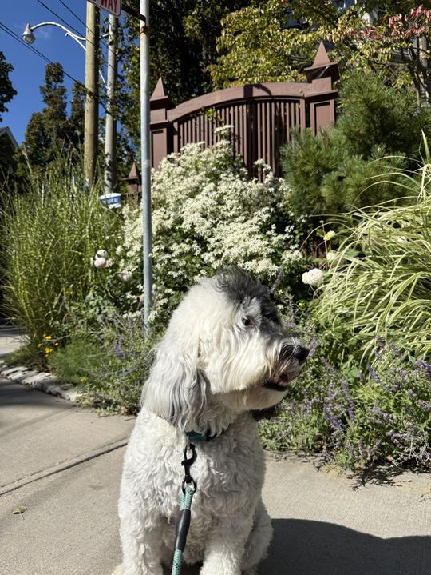
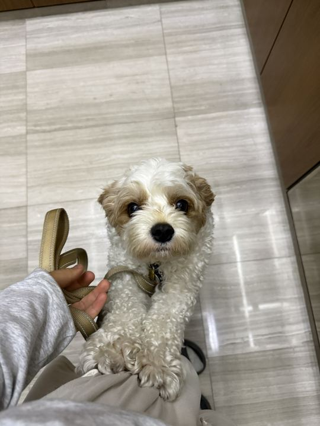

보리30분1.9km역삼공원
다른 강아지를 피해 아파트 뒷길로 돌았더니 한 번도 안 짖었어요.
11월 3일20

점심시간마다 역삼공원을 천천히 걷는 이웃 시터예요
역삼동같은 아파트 103동120m강아지를 정말 좋아해서 시터를 시작했어요. 어릴 때부터 진돗개와 함께 자랐고, 지금은 점심시간과 주말에 이웃 강아지들과 걸어요. 산책 중에는 사진과 소식을 자주 보내 드려요.
평일 오전 11:30~오후 2:30, 토요일 오전 10:00~오후 7:00
산책 소식이 시간마다 와서 회사에서도 마음이 놓였어요. 다른 강아지를 보면 짖는 걸 알고 일부러 조용한 길로 돌아 주셨대요.
콩이가 겁이 많아서 걱정했는데, 처음 5분은 현관 앞에서 냄새만 맡게 기다려 주셨어요. 사진 속 표정이 너무 편해 보여요.
보리30분1.9km역삼공원
다른 강아지를 피해 아파트 뒷길로 돌았더니 한 번도 안 짖었어요.

콩이30분첫 산책
처음엔 현관에서 한참 냄새만 맡다가 공원에 가서는 신나게 뛰었어요.
구름30분꽃 골목
바람 부는 날이라 귀가 날려서 자꾸 멈춰 섰어요.
시터가 정한 30분 가격을 바탕으로 나머지는 모두돌봄이 계산해요
취소는 산책 하루 전까지 수수료가 없어요. 앱에서 예약한 산책만 보험으로 보장돼요.